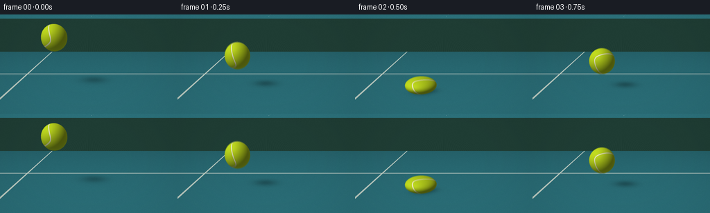
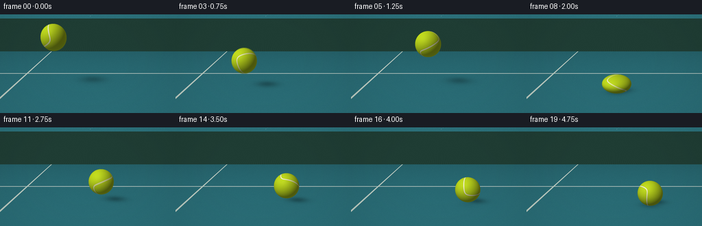
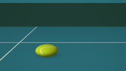

CODING AGENTS AS PIXEL WORLD MODELS
traex/GPT-6.1-Sol · phygen_028
点击播放 · 原生 RGB 像素
逐轮保存的候选
回放视频、检查图与代码变化。
每份候选均可单独播放。实际图片检查记录在下方工具轨迹中。
候选 01播放与检查图
点击播放 · 原生 RGB 像素


展开代码变化
--- 上一保存版本 +++ 本次保存版本 @@ -0,0 +1,159 @@ +"""Procedural RGB tennis-ball bounce. Only numpy/Pillow geometry and lighting.""" +from pathlib import Path +import numpy as np +from PIL import Image, ImageFilter +import artifact_io + +ROOT=Path(__file__).resolve().parent +W,H,SS=256,144,3 +w,h=W*SS,H*SS +rng=np.random.default_rng(28) +# Fixed, close, slightly elevated camera. +cam=np.array([0.,2.7,7.0]) +target=np.array([0.,1.1,0.]) +forward=target-cam; forward/=np.linalg.norm(forward) +right=np.cross(forward,[0.,1.,0.]);right/=np.linalg.norm(right) +up=np.cross(right,forward) +f=h/(2*np.tan(np.deg2rad(28)/2)) +yy,xx=np.mgrid[0:h,0:w] +rays=forward+(xx[...,None]+.5-w/2)/f*right-(yy[...,None]+.5-h/2)/f*up +rays/=np.linalg.norm(rays,axis=2)[...,None] +tfloor=-cam[1]/rays[...,1] +ground=cam+tfloor[...,None]*rays +X,Z=ground[...,0],ground[...,2] + +# Blue-green hard court, with fine mineral aggregate and a distant service line. +base=np.empty((h,w,3),float) +noise=rng.normal(0,1.5,(h,w)) +texture=(np.sin(X*328+Z*81)*np.sin(Z*393-X*152)+.45*np.sin(X*697-Z*923)) +base[:]=[40,103,112] +base+=((texture*.8+noise)[...,None]) +# Bright foreground and more subdued distant pavement. +base*=np.clip(1.05+.012*Z,.79,1.11)[...,None] +# White court line well behind the bouncing ball, across the upper third. +line=np.clip((.058-np.abs(Z+2.6))*f/(np.maximum(tfloor,1))+.5,0,1) +base=base*(1-line[...,None]) + np.array([197,207,199])*line[...,None] +# Subtle diagonal line at the far left. +line2=np.clip((.04-np.abs(X+3.05))*f/np.maximum(tfloor,1)+.5,0,1) +base=base*(1-line2[...,None])+np.array([186,201,191])*line2[...,None] +# Out of focus dark green windscreen at the far edge of the court. +back=Z < -9.5 +screen=np.zeros_like(base);screen[:]=[32, sixty:=62, fifty:=53] +mesh=2*np.sin(X*35+ground[...,1]*18)+1.0*np.sin(X*53) +screen+=mesh[...,None] +base=np.where(back[...,None],screen,base) +base=np.asarray(Image.fromarray(np.uint8(np.clip(base,0,255))).filter(ImageFilter.GaussianBlur(.25)),float) + +R=.46 +g=4.8 +hits=[.5,2.,3.,3.75,4.25,4.6] +launch=[3.6,2.4,1.8,1.2,.84,.45] +strength=[.37,.29,.22,.15,.10,.055] + +def motion(t): + t=max(0,t) + if t<.5: + height=2.05-1.98*t-.5*g*t*t + vy=-1.98-g*t + else: + k=max(i for i,v in enumerate(hits) if t>=v) + dt=t-hits[k] + height=R+max(0,launch[k]*dt-.5*g*dt*dt) + vy=launch[k]-g*dt + # Tangential speed dissipates gradually at each contact. + x=-1.20 + last=0.;v=.72 + for hit in hits: + dt=max(0,min(t,hit)-last) + x+=v*dt + if t<=hit:break + v*=.86;last=hit + else:x+=v*max(0,t-last) + squash=0 + for hit,amount in zip(hits,strength): + squash=max(squash,amount*np.exp(-((t-hit)/.062)**2)) + if squash>.003: + sy=1-squash;sx=1/np.sqrt(sy) + height=R*sy+max(0,height-R) + else: + # Small elastic extension during the fast first descent. + stretch=.075*np.clip(-vy/4.4,0,1) if t<.5 else .015*abs(vy)/3.6 + sy=1+stretch;sx=1/np.sqrt(sy) + return np.array([x,height,0.]),np.array([R*sx,R*sy,R*sx]),vy + +def rotation(t): + a=.45+1.7*t;b=.75+.41*t;c=-.40+.16*t + Rx=np.array([[1,0,0],[0,np.cos(a),-np.sin(a)],[0,np.sin(a),np.cos(a)]]) + Ry=np.array([[np.cos(b),0,np.sin(b)],[0,1,0],[-np.sin(b),0,np.cos(b)]]) + Rz=np.array([[np.cos(c),-np.sin(c),0],[np.sin(c),np.cos(c),0],[0,0,1]]) + return Rx@Ry@Rz + +light=np.array([-0.55,.78,.62]);light/=np.linalg.norm(light) + +def render(t): + pos,rad,vel=motion(t) + image=base.copy() + elevation=max(0,pos[1]-rad[1]) + # A shadow whose separation, softness and density vary with height. + shadow_center=pos[[0,2]]-light[[0,2]]/light[1]*pos[1] + dx=X-shadow_center[0];dz=Z-shadow_center[1] + rx=.45+.17*elevation;rz=.36+.19*elevation + q=(dx/rx)**2+(dz/rz)**2 + shadow=(.31/(1+.26*elevation))*np.exp(-1.7*q) + contact=np.exp(-((X-pos[0])/.34)**2-((Z-pos[2])/.28)**2)*.24*np.exp(-elevation*13) + image*= (1-np.clip(shadow+contact,0,.6))[...,None] + # Analytic ray / elastic ellipsoid intersection. + origin=(cam-pos)/rad + d=rays/rad + aa=np.sum(d*d,axis=2);bb=2*np.sum(d*origin,axis=2);cc=np.sum(origin*origin)-1 + disc=bb*bb-4*aa*cc + mask=disc>0 + dist=(-bb-np.sqrt(np.maximum(disc,0)))/(2*aa) + mask &= (dist>0)&(dist<tfloor) + iy,ix=np.nonzero(mask) + hit=cam+rays[iy,ix]*dist[iy,ix,None] + sphere=(hit-pos)/rad + norm=sphere/rad;norm/=np.linalg.norm(norm,axis=1)[:,None] + tex=sphere@rotation(t) + lon=np.arctan2(tex[:,1],tex[:,0]);lat=np.arcsin(np.clip(tex[:,2],-1,1)) + # Continuous curving seam separating the two felt panels. + seamdist=np.abs(lat-.66*np.cos(2*lon)) / np.sqrt(1+(1.32*np.sin(2*lon)/np.maximum(np.cos(lat),.28))**2) + seam=np.clip((.047-seamdist)/.012,0,1) + edge=np.exp(-((seamdist-.052)/.009)**2) + # Felt nap: stable multiscale fibers carried on the spinning sphere. + fibers=np.sin(tex[:,0]*374+tex[:,2]*523)*np.sin(tex[:,1]*411-tex[:,2]*117) + nap=np.sin(tex[:,0]*95+tex[:,1]*187+tex[:,2]*73)*np.cos(tex[:,2]*169-tex[:,0]*56) + diffuse=np.maximum(norm@light,0) + view=-rays[iy,ix] + facing=np.maximum(np.sum(norm*view,axis=1),0) + shade=.39+.61*diffuse+.075*(1-facing)**2 + col=np.tile(np.array([192.,218.,30.]),(len(iy),1)) + col+=(3.1*fibers+2.0*nap)[:,None] + col=col*(1-seam[:,None])+np.array([240.,238.,198.])*seam[:,None] + col*=shade[:,None] + col-=edge[:,None]*np.array([12,13,6]) + # Soft sun highlight rather than a plastic specular spot. + half=light+view;half/=np.linalg.norm(half,axis=1)[:,None] + spec=np.maximum(np.sum(norm*half,axis=1),0)**20*6 + col+=spec[:,None] + # Gentle ground-reflected teal, and contact darkening. + bottom=np.clip(-norm[:,1],0,1) + col+=bottom[:,None]*np.array([0.,4.,3.]) + col*=1-.14*bottom[:,None]*np.exp(-elevation*7) + image[iy,ix]=col + # Filmic, restrained vignette. + vign=1-.095*((xx-w*.5)/(w*.75))**2-.065*((yy-h*.47)/(h*.85))**2 + image*=vign[...,None] + return np.clip(image,0,255) + +def main(): + frames=[] + for i in range(20): + t=i/4 + # Brief photographic exposure; compressed contact remains readable. + image=sum(render(t+offset) for offset in [-.006,0,.006])/3 + frame=Image.fromarray(np.uint8(np.clip(image,0,255))).resize((W,H),Image.Resampling.LANCZOS) + frames.append(np.asarray(frame)) + artifact_io.save(np.stack(frames),ROOT) + +if __name__=='__main__':main()
可观测工具轨迹
实际执行的命令与返回图片。
命令 1exit 0
/bin/bash -lc "ls -la && cat prompt.txt && printf '\\n---RULES---\\n' && cat GENERATION_RULES.md && printf '\\n---SPEC---\\n' && cat task_spec.json"
命令 2exit 0
/bin/bash -lc "cat artifact_io.py && python - <<'PY'
import numpy,PIL
print('available')
PY"命令 3exit 0
/bin/bash -lc "cat > generate.py <<'PY'
\"\"\"Procedural RGB tennis-ball bounce. Only numpy/Pillow geometry and lighting.\"\"\"
from pathlib import Path
import numpy as np
from PIL import Image, ImageFilter
import artifact_io
ROOT=Path(__file__).resolve().parent
W,H,SS=256,144,3
w,h=W*SS,H*SS
rng=np.random.default_rng(28)
# Fixed, close, slightly elevated camera.
cam=np.array([0.,2.7,7.0])
target=np.array([0.,1.1,0.])
forward=target-cam; forward/=np.linalg.norm(forward)
right=np.cross(forward,[0.,1.,0.]);right/=np.linalg.norm(right)
up=np.cross(right,forward)
f=h/(2*np.tan(np.deg2rad(28)/2))
yy,xx=np.mgrid[0:h,0:w]
rays=forward+(xx[...,None]+.5-w/2)/f*right-(yy[...,None]+.5-h/2)/f*up
rays/=np.linalg.norm(rays,axis=2)[...,None]
tfloor=-cam[1]/rays[...,1]
ground=cam+tfloor[...,None]*rays
X,Z=ground[...,0],ground[...,2]
# Blue-green hard court, with fine mineral aggregate and a distant service line.
base=np.empty((h,w,3),float)
noise=rng.normal(0,1.5,(h,w))
texture=(np.sin(X*328+Z*81)*np.sin(Z*393-X*152)+.45*np.sin(X*697-Z*923))
base[:]=[40,103,112]
base+=((texture*.8+noise)[...,None])
# Bright foreground and more subdued distant pavement.
base*=np.clip(1.05+.012*Z,.79,1.11)[...,None]
# White court line well behind the bouncing ball, across the upper third.
line=np.clip((.058-np.abs(Z+2.6))*f/(np.maximum(tfloor,1))+.5,0,1)
base=base*(1-line[...,None]) + np.array([197,207,199])*line[...,None]
# Subtle diagonal line at the far left.
line2=np.clip((.04-np.abs(X+3.05))*f/np.maximum(tfloor,1)+.5,0,1)
base=base*(1-line2[...,None])+np.array([186,201,191])*line2[...,None]
# Out of focus dark green windscreen at the far edge of the court.
back=Z < -9.5
screen=np.zeros_like(base);screen[:]=[32, sixty:=62, fifty:=53]
mesh=2*np.sin(X*35+ground[...,1]*18)+1.0*np.sin(X*53)
screen+=mesh[...,None]
base=np.where(back[...,None],screen,base)
base=np.asarray(Image.fromarray(np.uint8(np.clip(base,0,255))).filter(ImageFilter.GaussianBlur(.25)),float)
R=.46
g=4.8
hits=[.5,2.,3.,3.75,4.25,4.6]
launch=[3.6,2.4,1.8,1.2,.84,.45]
strength=[.37,.29,.22,.15,.10,.055]
def motion(t):
t=max(0,t)
if t<.5:
height=2.05-1.98*t-.5*g*t*t
vy=-1.98-g*t
else:
k=max(i for i,v in enumerate(hits) if t>=v)
dt=t-hits[k]
height=R+max(0,launch[k]*dt-.5*g*dt*dt)
vy=launch[k]-g*dt
# Tangential speed dissipates gradually at each contact.
x=-1.20
last=0.;v=.72
for hit in hits:
dt=max(0,min(t,hit)-last)
x+=v*dt
if t<=hit:break
v*=.86;last=hit
else:x+=v*max(0,t-last)
squash=0
for hit,amount in zip(hits,strength):
squash=max(squash,amount*np.exp(-((t-hit)/.062)**2))
if squash>.003:
sy=1-squash;sx=1/np.sqrt(sy)
height=R*sy+max(0,height-R)
else:
# Small elastic extension during the fast first descent.
stretch=.075*np.clip(-vy/4.4,0,1) if t<.5 else .015*abs(vy)/3.6
sy=1+stretch;sx=1/np.sqrt(sy)
return np.array([x,height,0.]),np.array([R*sx,R*sy,R*sx]),vy
def rotation(t):
a=.45+1.7*t;b=.75+.41*t;c=-.40+.16*t
Rx=np.array([[1,0,0],[0,np.cos(a),-np.sin(a)],[0,np.sin(a),np.cos(a)]])
Ry=np.array([[np.cos(b),0,np.sin(b)],[0,1,0],[-np.sin(b),0,np.cos(b)]])
Rz=np.array([[np.cos(c),-np.sin(c),0],[np.sin(c),np.cos(c),0],[0,0,1]])
return Rx@Ry@Rz
light=np.array([-0.55,.78,.62]);light/=np.linalg.norm(light)
def render(t):
pos,rad,vel=motion(t)
image=base.copy()
elevation=max(0,pos[1]-rad[1])
# A shadow whose separation, softness and density vary with height.
shadow_center=pos[[0,2]]-light[[0,2]]/light[1]*pos[1]
dx=X-shadow_center[0];dz=Z-shadow_center[1]
rx=.45+.17*elevation;rz=.36+.19*elevation
q=(dx/rx)**2+(dz/rz)**2
shadow=(.31/(1+.26*elevation))*np.exp(-1.7*q)
contact=np.exp(-((X-pos[0])/.34)**2-((Z-pos[2])/.28)**2)*.24*np.exp(-elevation*13)
image*= (1-np.clip(shadow+contact,0,.6))[...,None]
# Analytic ray / elastic ellipsoid intersection.
origin=(cam-pos)/rad
d=rays/rad
aa=np.sum(d*d,axis=2);bb=2*np.sum(d*origin,axis=2);cc=np.sum(origin*origin)-1
disc=bb*bb-4*aa*cc
mask=disc>0
dist=(-bb-np.sqrt(np.maximum(disc,0)))/(2*aa)
mask &= (dist>0)&(dist<tfloor)
iy,ix=np.nonzero(mask)
hit=cam+rays[iy,ix]*dist[iy,ix,None]
sphere=(hit-pos)/rad
norm=sphere/rad;norm/=np.linalg.norm(norm,axis=1)[:,None]
tex=sphere@rotation(t)
lon=np.arctan2(tex[:,1],tex[:,0]);lat=np.arcsin(np.clip(tex[:,2],-1,1))
# Continuous curving seam separating the two felt panels.
seamdist=np.abs(lat-.66*np.cos(2*lon)) / np.sqrt(1+(1.32*np.sin(2*lon)/np.maximum(np.cos(lat),.28))**2)
seam=np.clip((.047-seamdist)/.012,0,1)
edge=np.exp(-((seamdist-.052)/.009)**2)
# Felt nap: stable multiscale fibers carried on the spinning sphere.
fibers=np.sin(tex[:,0]*374+tex[:,2]*523)*np.sin(tex[:,1]*411-tex[:,2]*117)
nap=np.sin(tex[:,0]*95+tex[:,1]*187+tex[:,2]*73)*np.cos(tex[:,2]*169-tex[:,0]*56)
diffuse=np.maximum(norm@light,0)
view=-rays[iy,ix]
facing=np.maximum(np.sum(norm*view,axis=1),0)
shade=.39+.61*diffuse+.075*(1-facing)**2
col=np.tile(np.array([192.,218.,30.]),(len(iy),1))
col+=(3.1*fibers+2.0*nap)[:,None]
col=col*(1-seam[:,None])+np.array([240.,238.,198.])*seam[:,None]
col*=shade[:,None]
col-=edge[:,None]*np.array([12,13,6])
# Soft sun highlight rather than a plastic specular spot.
half=light+view;half/=np.linalg.norm(half,axis=1)[:,None]
spec=np.maximum(np.sum(norm*half,axis=1),0)**20*6
col+=spec[:,None]
# Gentle ground-reflected teal, and contact darkening.
bottom=np.clip(-norm[:,1],0,1)
col+=bottom[:,None]*np.array([0.,4.,3.])
col*=1-.14*bottom[:,None]*np.exp(-elevation*7)
image[iy,ix]=col
# Filmic, restrained vignette.
vign=1-.095*((xx-w*.5)/(w*.75))**2-.065*((yy-h*.47)/(h*.85))**2
image*=vign[...,None]
return np.clip(image,0,255)
def main():
frames=[]
for i in range(20):
t=i/4
# Brief photographic exposure; compressed contact remains readable.
image=sum(render(t+offset) for offset in [-.006,0,.006])/3
frame=Image.fromarray(np.uint8(np.clip(image,0,255))).resize((W,H),Image.Resampling.LANCZOS)
frames.append(np.asarray(frame))
artifact_io.save(np.stack(frames),ROOT)
if __name__=='__main__':main()
PY
python generate.py"视觉工具实际返回图片 1

视觉工具实际返回图片 2

保存候选 1 份；完成命令 3 次；可验证图片返回 2 张。原始 API 响应与完整日志保留在本地。